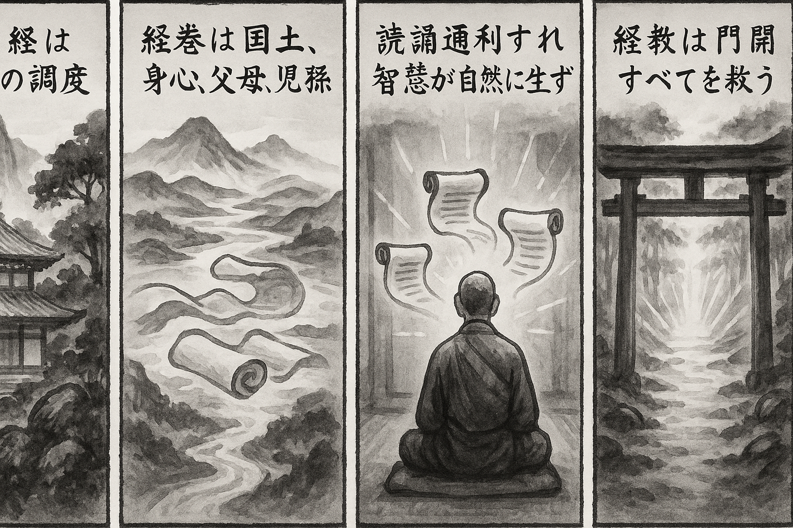

七十五巻 巻一覧
正法眼藏第47 佛經
本ページは各巻の紹介ページです。tools/gen_web_volumes.py が doc/正法眼蔵.txt から要点の短い抜粋を載せています（全文の引用ではありません）。
出典（原文）: https://shomonji.or.jp/zazen/doc/genzou.html
原文・現代語訳の全文は 全文ページを参照してください。
この巻の紹介（概要）
道元『正法眼蔵』七十五巻の第47篇「佛經」です。禅籍・経典への引用や語の行間が重なりやすいので、一度ですべてを要約に還元しない読み方を推奨します。問答 Bot では巻スコープにこの題名を含めると応答が安定しやすいことがあります。
語彙の足場
- 題名語：巻題「佛經」は、道元が本章で特に扱う論点の看板です。辞書義だけに固定せず、原文中の用例で意味を確かめます。
- 引用と典故：公案・経文の引用は、一字一句の照応（何に答えているか）を押さえると全体が見えやすくなります。
- 学び方：抜粋だけでも音読し、分からない箇所は印を付けて後から問うとよいです。
原文（要点の抜粋）
当巻の冒頭付近からの短い抜粋です。長い引用は載せていません。全文は全文ページを参照してください。出典はリポジトリ内 doc/正法眼蔵.txt です。原文の参照元: https://shomonji.or.jp/zazen/doc/genzou.html
このなかに、教菩薩法あり、教諸佛法あり。おなじくこれ大道の調度なり。調度ぬしにしたがふ、ぬし調度をつかふ。これによりて、西天東地の佛祖、かならず或從知識、或從經卷の正當恁麼時、おのおの發意、修行、證果、かつて間隙あらざるものなり。發意も經卷知識により、修行も經卷知識による、證果も經卷知識に一親なり。機先句後、おなじく經卷知識に同參なり。機中句裏、おなじく經卷知識に同參なり。
知識はかならず經卷を通利す。通利すといふは、經卷を國土とし、經卷を身心とす。經卷を爲他の施設とせり、經卷を坐臥經行とせり。經卷を父母とし、經卷を兒孫とせり。經卷を行解とせるがゆゑに、これ知識の經卷を參究せるなり。知識の洗面喫茶、これ古經なり。經卷の知識を出生するといふは、黄檗の六十拄杖よく兒孫を生長せしめ、黄梅の打三杖よく傳衣附法せしむるのみにあらず、桃花をみて悟道し、竹響をききて悟道する、および見明星悟道、みなこれ經卷の知識を生長せしむるなり。あるいはまなこをえて經卷をうる皮袋拳頭あり、あるいは經卷をえてまなこをうる木杓漆桶あり。
いはゆる經卷は、盡十方界これなり。經卷にあらざる時處なし。勝義諦の文字をもちゐ、世俗諦の文字をもちゐ、あるいは天上の文字をもちゐ、あるいは人間の文字をもちゐ、あるいは畜生道の文字をもちゐ、あるいは修羅道の文字をもちゐ、あるいは百草の文字をもちゐ、あるいは萬木上の文字をもちゐる。このゆゑに、盡十方界に森森として羅列せる長短方圓、靑黄赤白、しかしながら經卷の文字なり、經卷の表面なり。これを大道の調度とし、佛家の經卷とせり。
この經卷、よく蓋時に流布し、蓋國に流通す。教人の門をひらきて盡地の人家をすてず、教物の門をひらきて盡地の物類をすくふ。教諸佛し、教菩薩するに、盡地盡界なるなり。開方便門し、開住位門して、一箇半箇をすてず、示眞實相するなり。この正恁麼時、あるいは諸佛、あるいは菩薩の慮知念覺と無慮知念覺と、みづからおのおの強爲にあらざれども、この經卷をうるを、各面の大期とせり。
必得是經のときは、古今にあらず、古今は得經の時節なるがゆゑに。盡十方界の目前に現前せるは、これ得是經なり。この經を讀誦通利するに、佛智、自然智、無師智、こころよりさきに現成し、身よりさきに現成す。このとき、新條の特地とあやしむことなし。この經のわれらに受持讀誦せらるるは、經のわれらを接取するなり。文先句外、向下節上の消息、すみやかに散花貫花なり。
この經をすなはち法となづく。これに八萬四千の説法蘊あり。この經のなかに成等正覺の諸佛なる文字あり、現住世間の諸佛なる文字あり、入般涅槃の諸佛なる文字あり。如來如去、ともに經中の文字なり、法上の法文なり。拈花瞬目、微笑破顔、すなはち七佛正傳の古經なり。腰雪斷臂、禮拜得髓、まさしく師資相承の古經なり。つひにすなはち傳法附衣する、これすなはち廣文全卷を附囑せしむる時節至なり。みたび臼をうち、みたび箕の米をひる、經の經を出手せしめ、經の經に正嗣するなり。
しかのみにあらず、是什麼物恁麼來、これ教諸佛の千經なり、教菩薩の萬經なり。説似一物卽不中、よく八萬蘊をとき、十二部をとく。いはんや拳頭脚跟、拄杖拂子、すなはち古經新經なり、有經空經なり。在衆辨道、功夫坐禪、もとより頭正也佛經なり、尾正也佛經なり。菩提葉に經し、虛空面に經す。
おほよそ佛祖の一動兩靜、あはせて把定放行、おのれづから佛經の卷舒なり。窮極あらざるを、窮極の標準と參學するゆゑに、鼻孔より受經出經す、脚尖よりも受經出經す。父母未生前にも受經出經あり、威音王以前にも受經出經あり。山河大地をもて經をうけ經をとく。日月星辰をもて經をうけ經をとく。あるいは空劫已前の自己をして經を持し經をさづく。あるいは面目已前の身心をもて經を持し經をさづく。かくのごとくの經は、微塵を破して出現せしむ、法界を破していださしむるなり。
第二十七祖般若多羅尊者道、貧道出息不隨衆緣、入息不居蘊界。常轉如是經、百千萬億卷。非但一卷兩卷（貧道は出息衆緣に隨はず、入息蘊界に居せず。常に如是經を轉ずること、百千萬億卷なり。但一卷兩卷のみにあらず）。
かくのごとくの祖師道を聞取して、出息入息のところに轉經せらるることを參學すべし。轉經をしるがごときは、在經のところをしるべきなり。能轉所轉、轉經經轉なるがゆゑに、悉知悉見なるべきなり。
先師尋常道、我箇裏、不用燒香禮拜念佛修懺看經、祗管打坐、辨道功夫、身心脱落（我が箇裏、燒香禮拜念佛修懺看經を用ゐず、祗管に打坐し、辨道功夫して身心脱落す）。
かくのごとくの道取、あきらむるともがらまれなり。ゆゑはいかん。看經をよんで看經とすれば觸す、よんで看經とせざればそむく。不得有語、不得無語。速道、速道。
図解（4コマ・AI生成）
教義の根拠は原文・出典に従い、漫画は比喩の補助に留めてください。

深掘り（読解のコツ）
- 道元文は定義の羅列に見えても、多くの場合誤解への遮断と正伝の姿勢が背骨になっています。
- 「当体」「現成」「即」などの語が出たら、その巻独自の差別相にどう接続しているかをメモしておくとよいです。